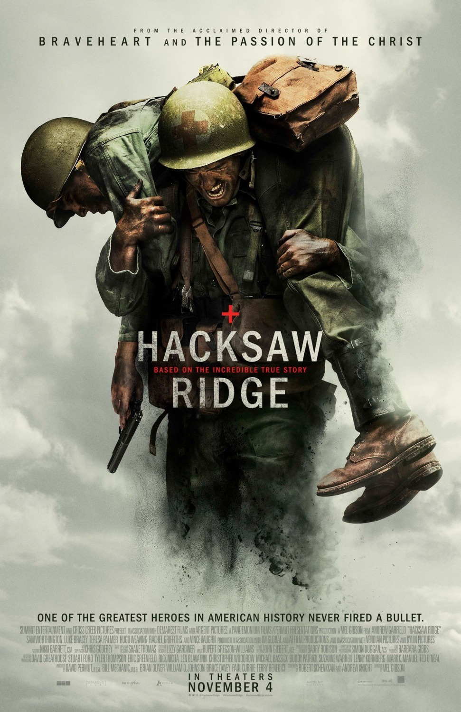

| Movie |
Images |
Description |
| 1. Creed |
|
Adonis Johnson (Michael B. Jordan) never knew his famous father, boxing champion Apollo Creed, who died before Adonis was born. However, boxing is in his blood, so he seeks out Rocky Balboa (Sylvester Stallone) and asks the retired champ to be his trainer. Rocky sees much of Apollo in Adonis, and agrees to mentor him, even as he battles an opponent deadlier than any in the ring. With Rocky's help, Adonis soon gets a title shot, but whether he has the true heart of a fighter remains to be seen. |
| 2. Hackshaw Ridge |
 |
The true story of Pfc. Desmond T. Doss (Andrew Garfield), who won the Congressional Medal of Honor despite refusing to bear arms during WWII on religious grounds. Doss was drafted and ostracized by fellow soldiers for his pacifist stance but went on to earn respect and adoration for his bravery, selflessness and compassion after he risked his life -- without firing a shot -- to save 75 men in the Battle of Okinawa. |
| 3. 12 strong |
 |
In the wake of the September 11 attacks, Captain Mitch Nelson leads a US Special Forces team into Afghanistan for an extremely dangerous mission. Once there, the soldiers develop an uneasy partnership with the Northern Alliance to take down the Taliban and its al-Qaida allies. Outgunned and outnumbered, Nelson and his forces face overwhelming odds in a fight against a ruthless enemy that takes no prisoners. |